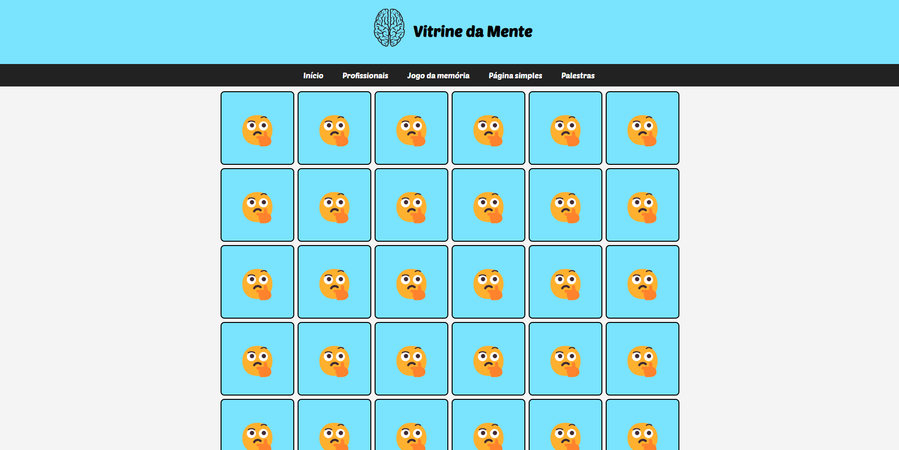
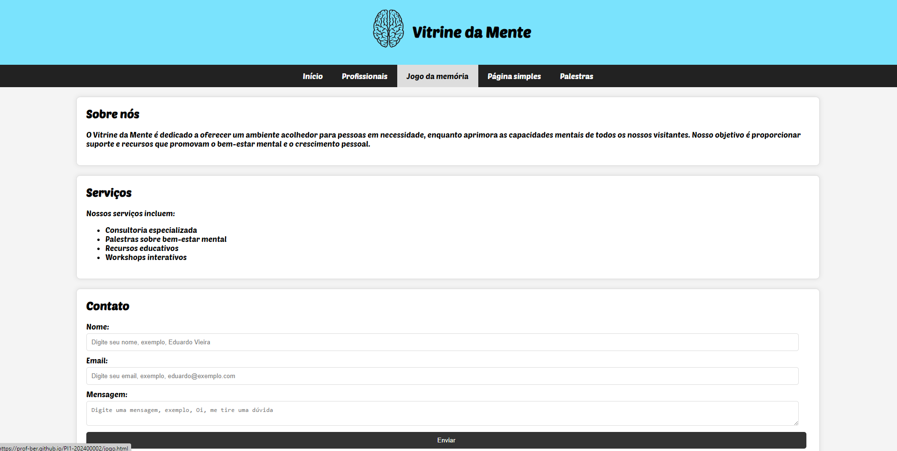
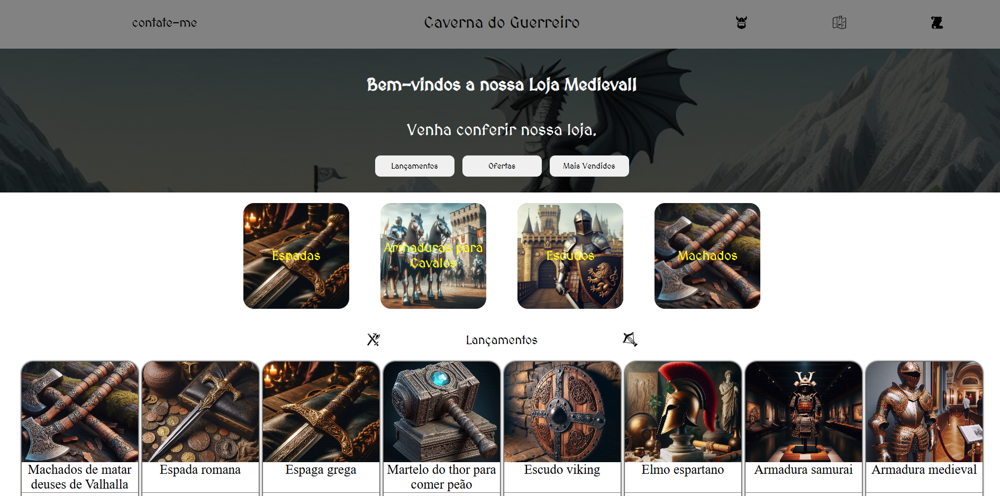
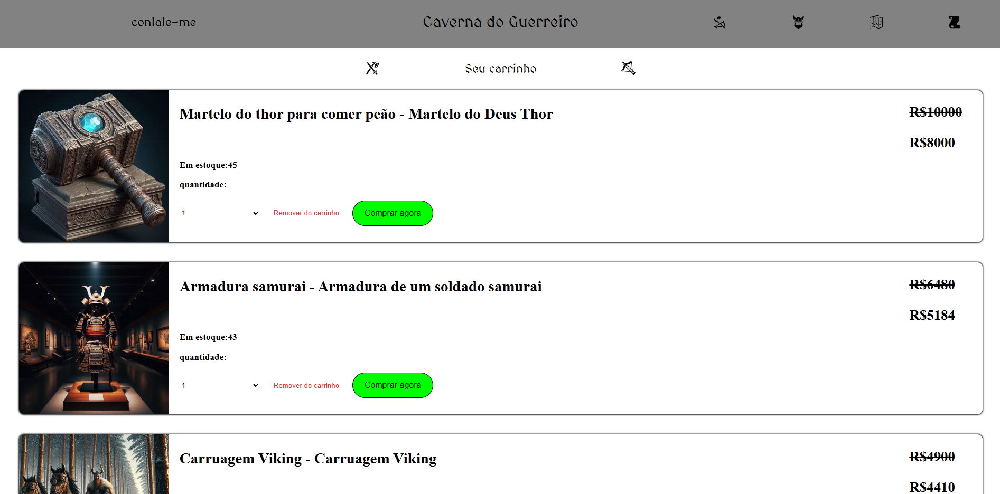

Somos a turma 202400002 do Técnico em Informática para Internet do Senac Pato Branco, orientada pelo professor Bernardo Lima, MSc, e nosso objetivo aqui é apender cada vez mais e agregar valor junto com outras turmas.
Olá, sou o Pedro Armiliato, tenho 18 anos, sou um dos alunos do curso de Técnico em Informática para a Internet, aluno do Bernardo Lima, é um prazer estar aqui, porque nunca imaginei que um dia ia gostar tanto de computador e códigos, é um curso que recomendo demais para quem gosta de TI, porque é uma área que está em alta, e certas profissões pagam bem.
Sou estudante de desenvolvimento de websites, atualmente cursando um programa técnico iniciado em março de 2024, dedico-me em aprimorar minhas habilidades em criação e desenvolvimento para a web, com foco em interfaces intuitivas e responsivas. Explorando ferramentas e tendências modernas, e estou comprometido em construir experiências digitais envolventes e funcionais.
Uma rede social voltada para microblogging e bate-papo, onde os usuários podem compartilhar ideias, opiniões, fotos e vídeos de forma rápida e interativa. A plataforma permite que cada pessoa expresse suas perspectivas, conecte-se com outras e acompanhe conteúdos relevantes em um ambiente dinâmico e envolvente. Está sedo desenvolvido em Next.js, express e banco de dados MySQL.
O Vitrine da Mente é dedicado a oferecer um ambiente acolhedor para pessoas em necessidade, enquanto aprimora as capacidades mentais de todos os nossos visitantes. Nosso objetivo é proporcionar suporte e recursos que promovam o bem-estar mental e o crescimento pessoal. O jogo da memória foi feito em react.
 Projeto de uma loja de produtos medievais desenvolvida com Next.js, express e MongoDB. Envolve planejamento, prototipação, criação de carrinho, checkout e autenticação de usuários, além de implementação de segurança, garantindo uma experiência de compra imersiva e segura. Além disso ele é responsivo e funciona em celular.
 